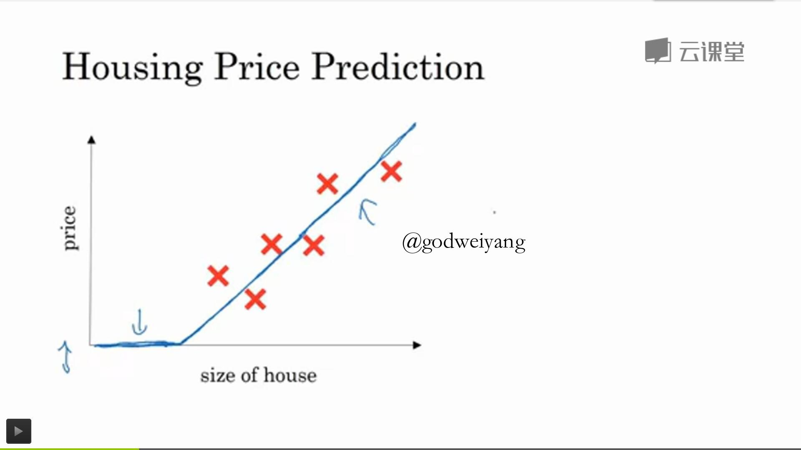
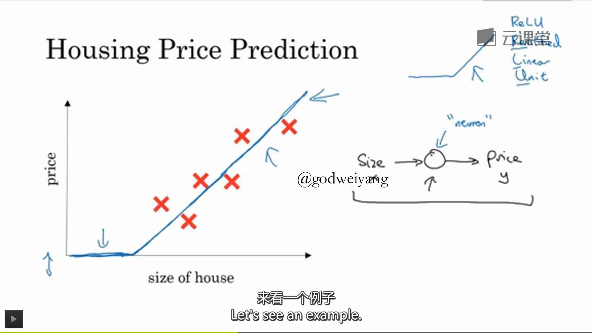
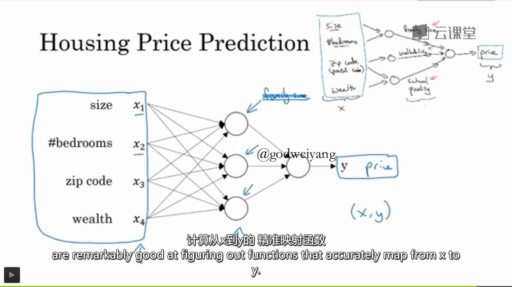
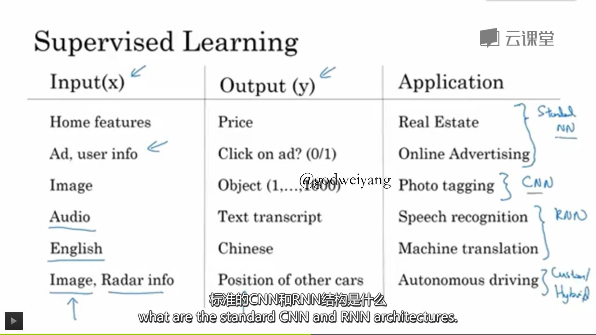
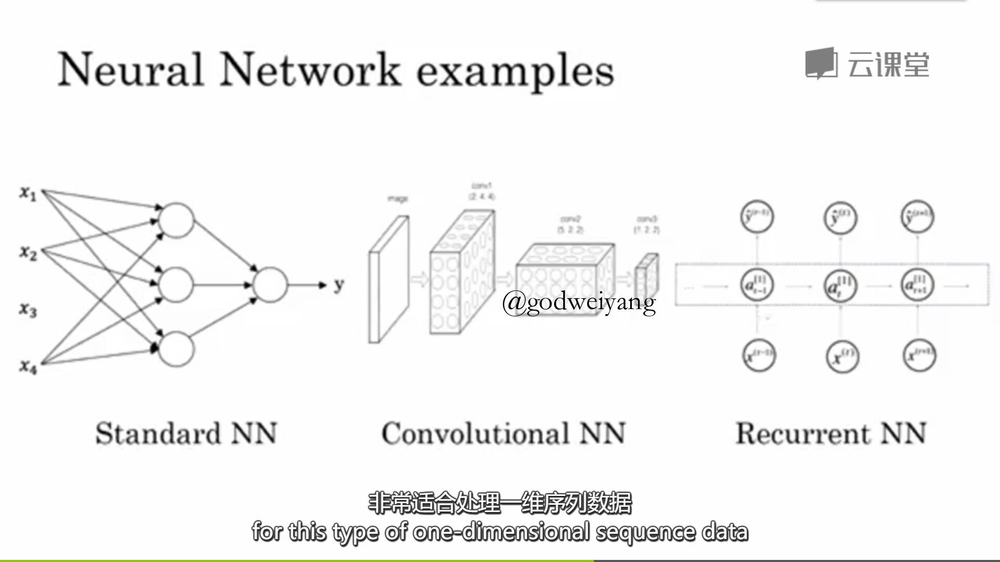
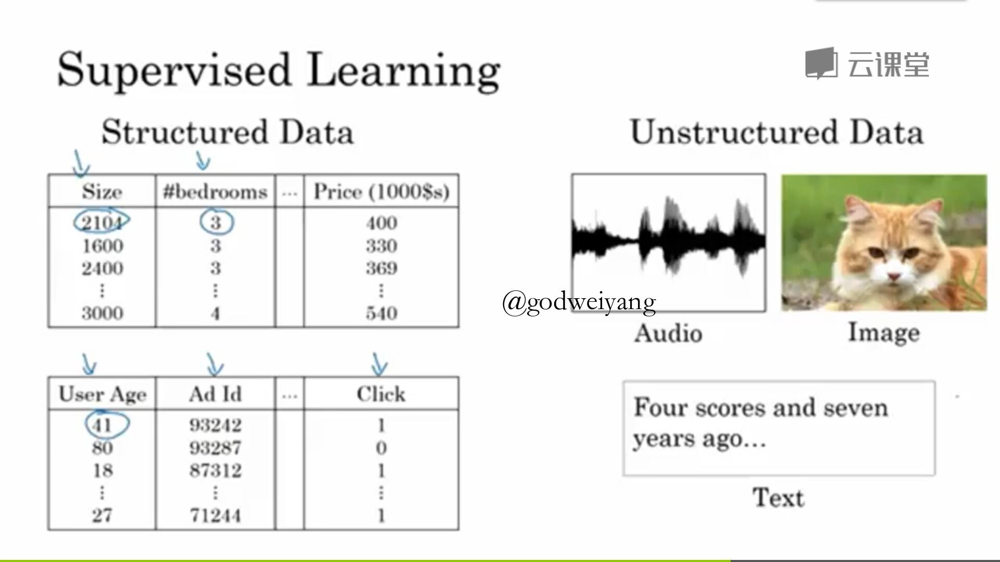
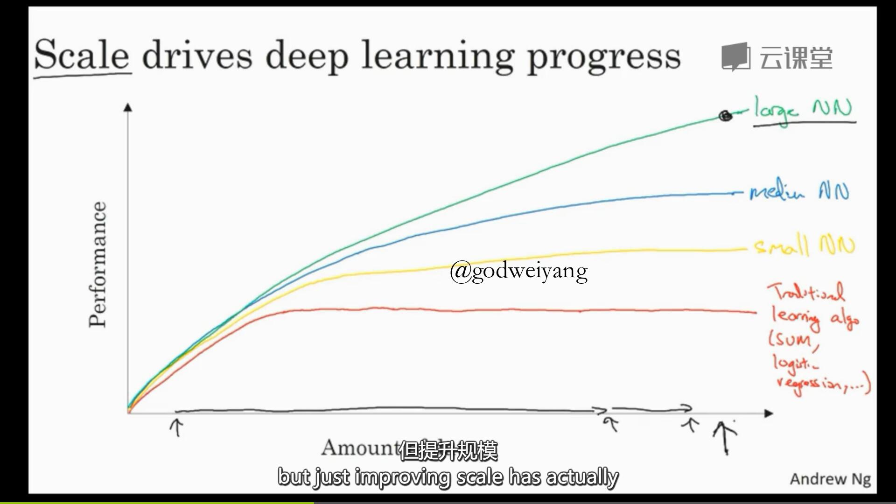
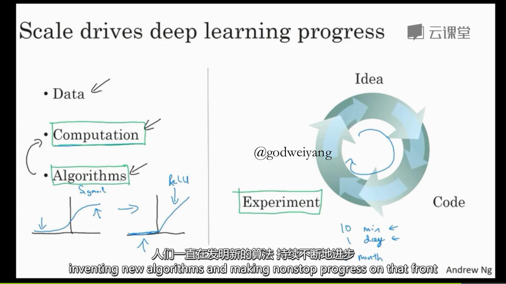

保了研暂时也没什么事干，从今天开始学一学吴恩达最近发布的深度学习课程。顺便在博客上做做笔记，梳理一下。
coursera上面的课程要钱，还贼贵。所以我就直接在网易公开课上面看免费版的了，免费版没有作业和练习，是一个很大的缺憾。因为这门课很大的一个亮点就是高质量的编程题。顺带附上这门课的地址：吴恩达深度学习公开课
1.2 什么是神经网络？
这节课是深度学习的入门课，首先给出了深度学习的定义：深度学习就是训练神经网络。那么问题来了，什么是神经网络？这节课就介绍了神经网络的概念。

首先从一个房价预测的例子讲起，已知房子大小和对应的房价，用一条曲线拟合这些点。那么用一条直线就可以了，但是房价不能为负，所以左边恒为0，这个函数就是“线性修正单元”，即ReLU。

这就是最基本的神经元，输入一个房子大小也就是$x$，经过一个神经单元运算之后，输出房价也就是$y$。

更复杂的情况下，房价还取决于更多的因素，比如房子大小、房间数量、邮编、周边富裕程度。
我们不会具体指明中间一层的神经单元代表什么，神经网络想怎么算就怎么算。所以上图从左到右三层分别叫做输入层、隐含层、输出层。
值得注意的是，神经网络只要你喂给了它足够多的$(x,y)$训练数据，那么它就可以训练出一个从$x$到$y$的精准映射函数。
这就是最基本的神经网络和监督学习的例子，也就是你任意输入一个$x$，神经网络都可以预测出一个对应的$y$。
下一讲将会更加深入的讲解监督学习的相关算法。
1.3 用神经网络进行监督学习
神经网络最近被媒体炒作的沸沸扬扬，其实绝大多数神经网络创造的价值都来自于一种机器学习算法：监督学习。

可以看出，监督学习就是输入一个特征$x$，然后学习得到一个输出$y$。监督学习在很多不同领域有重要应用，比如之前提到的房价预测，还有在线广告、计算机视觉、语音识别、机器翻译和自动驾驶等等。
他们所应用的神经网络结构也都是不同的。其中房价预测和在线广告用的是标准的神经网络。而计算机视觉处理的是空间上的图像，所以用到的是卷积神经网络(CNN)。语音识别和机器翻译因为都是处理的时间相关的序列，所以用到的是循环神经网络(RNN)。而自动驾驶就更加的复杂了，既要处理图像，又要处理雷达信息，所以要用混合神经网络。

上图就是三种神经网络的基本结构，CNN擅长处理图像相关的数据，RNN擅长处理序列相关的数据。

输入的数据也分为两大类：结构化数据和非结构化数据。结构化数据就是指数据的数据库，每一个数据都是有明确的含义的，比如房子的大小，房间的数量等等。非结构化数据就是指音频、图像、文本之类的数据。
人类天生就更擅长理解非结构化数据，但是计算机就不行了。近几年来，神经网络的发展让计算机也能非常好的理解非结构化数据了。在实际应用中，最好要将结构化数据和非结构化数据结合起来，才能发挥出最好的性能。
其实神经网络几十年前就已经提出来了，那为什么最近几年才流行起来呢？下一节吴恩达老师将会给我们带来答案。
1.4 为什么深度学习会兴起?
上节课最后提到，神经网络几十年前就有了，那为什么最近几年才兴起呢？

吴恩达通过一张图很好的解释了原因。如上图所示，$x$轴是数据量，$y$轴是机器学习算法的效率，具体来说就是图像识别的准确率等等。
可以看出，随着数据量的增大，机器学习算法的效率也随之增大。但是传统的机器学习算法比如支持向量机(SVM)在数据量大到一个程度之后会进入“平台期”，不会再上升了。而不同规模的神经网络会一直上升，只要你数据足够多。
所以在今天要想得到更好的效果，就要训练一个大规模的神经网络，这个大规模指的是两个方面：一个是神经网络的隐含层单元足够多，也就是参数足够多，一个就是数据规模要足够多。但是这最终也是有瓶颈的，因为神经网络太大了之后计算效率就会下降，训练时间会特别长。数据也会耗尽，没有无限的数据。
从技术上面来说，上图$x$轴的数据代表的是“有标签的数据”，也就是每个输入$x$都有一个标签$y$与之对应，一组数据就是一对$(x,y)$。在以后的课程中，我们都使用$m$来表示数据的规模，也就是$x$轴的数值。
在上图中我们还可以看出，在数据量比较小的时候，传统机器学习算法甚至会优于神经网络。因为它的性能基于手工设计组件的优劣和一些算法细节上面的优化，比如特征的提取等等。但是训练数据规模大了以后，神经网络就稳定优于传统机器学习方法了。

影响神经网络性能的因素主要有三点：数据规模、计算能力、算法。
数据规模之前已经提到过了。计算能力的话因为最近几年CPU和GPU的发展，计算能力得到很大的提升，所以训练时间也大大缩短。算法优化也是为了缩短训练时间，课上举了一个算法优化的例子。
以前神经网络激活函数都是用的sigmoid函数，图像如上图所示。但是存在一个问题，就是一直训练下去会出现梯度消失的问题，反映在函数图象上就是当输入太小时斜率会趋于0。所以后来换成了ReLU函数，在大于0的时候斜率恒为1。
图的右半部分是神经网络训练的流程。首先你要想出一个算法，然后你要实现代码，最后运行结果进行训练。如果训练时间很短，比如10分钟或者一天以内，那么你就可以调整算法，继续优化训练。如果训练时间要一个月，那么你就只能实现很少的想法了。
可喜的是，现在数据和硬件还在继续发展着，我们要做的就是继续研究新的算法和进行算法的优化。所以我们坚信，深度学习还会继续发展进步下去。